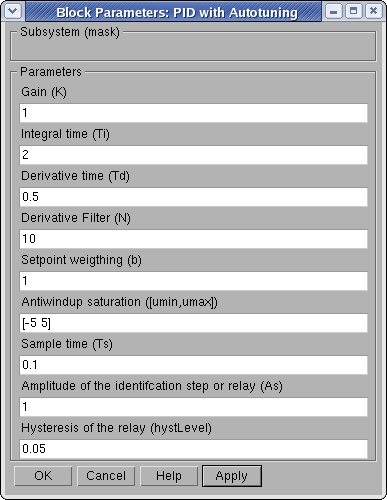
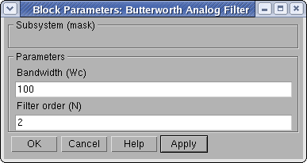

| AutotunerPID Toolkit | |
Setting up the Simulation
The parameters of the simulation can be adjusted by the user both through the classical Simulink menu and with a set of block masks.
Simulation Control
Running the simulation
The simulation is started, stopped and paused with the classical Simulink menu or with toolbar buttons.
Simulation Parameters
The simulation parameters are setted on the Simulation Parameters dialog box, accessible through the Simulation menu. In particular, the stop time is set to a very high value to reproduce the effects of a simulation running continuously, while the solver is the ode45 to allow a plant with a general structure.
Initialization of the Autotuner
The parameters of the regulator can be initialized through the mask of the block PID with Autotuning.
|  |
Initial PID parameters
The first part of the mask allow to set the initial value of the ISA-PID parameters (K, Ti, Td, N, b). The weight of the derivative action is fixed (c=0), so that it does not appear in the mask.
Antiwindup saturation
The lower and higher limits on the control variable are given as a vector in the corresponding text field. To disable antiwindup set the limit to [-inf, inf].
Sample time
The choice of the sample time is related to the process characteristics. In general, small sample times mean a slow simulations, while large semple times mean fast simulations. However, the discretization of the PID adds a delay to the loop which grows with the sample time, so that the effective behavior of the control systems can be very different from the expected one (computed with respect to a continuos time regulator).
Identification experiment
The last part of the mask allows to set the characteristics of the identification experiment:
Butterworth filter
The parameters of the lowpass Butterworth analog filter can be initialized through the mask of the block Butterworth Analog Filter.
|  |
In general, the order of the filter should be small enough to keep low the additional phase lag (typically 2 or 3). Similarly the bandwidth should not be too small, even the effect of measurement noise are best counteracted by a small bandwidth.
| | Layout of the Control System | PID Control Panel | |